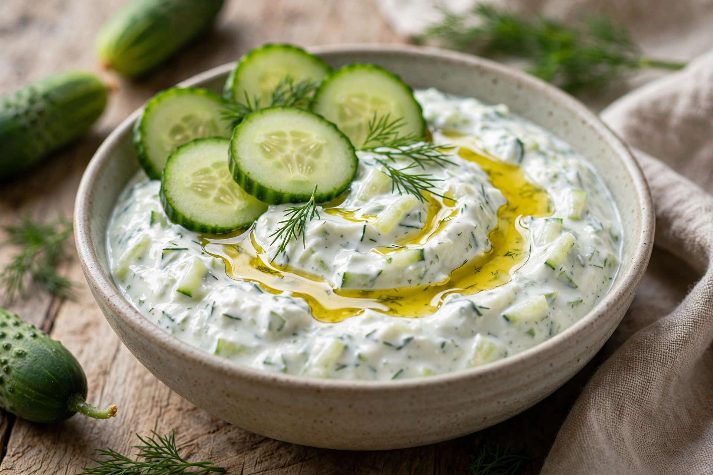

From Wikipedia, the free encyclopedia
| Tzatziki | |
|---|---|
 | |
| Type | Dip / sauce |
| Place of origin | Greece |
| Main ingredients | Strained yogurt, cucumber, garlic, olive oil, dill or mint |
Tzatziki (Greek: τζατζίκι) is a Greek dip or sauce made of salted strained yogurt mixed with cucumber, garlic, salt, olive oil, and herbs such as dill or mint, sometimes with lemon juice. It is served as a cold appetiser with bread, spread in gyros and souvlaki wraps, or as an accompaniment to grilled meats.
Greek yogurt is strained to remove whey. Cucumber is grated or finely diced, salted, and squeezed dry to keep the sauce thick. The mixture is seasoned with crushed garlic and olive oil and chilled so the flavours meld. Turkish cacık is a closely related but usually thinner preparation, and similar yogurt-and-cucumber dishes exist across the Balkans, the Middle East (as a form of raita-like condiment), and South Asia.
The name comes from the Turkish word cacık. Yogurt-and-cucumber dishes have a long history in Ottoman cuisine, from which regional variants developed across the empire's former territories.
Hummus · Greek cuisine · Raita